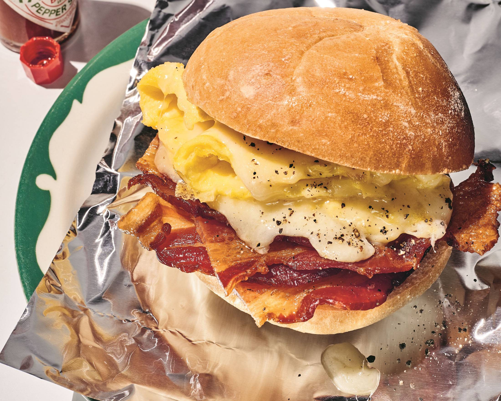

Bacon Egg 'n Cheese

What is a Bacon Egg 'n Cheese
the bacon, egg and cheese “is everything you need: salty, crunchy,
creamy, filling.” Because the iconic New York sandwich (which is
also known as a “baconeggandcheese” or “B.E.C.” when you're in a
hurry), is made at thousands of carts and bodegas in all five
boroughs, many locals wouldn't think to cook one at home. But if
you're desperate for the resuscitation only a B.E.C. can provide,
this homestyle adaptation delivers: gooey cheese, crispy bacon and
eggs smushed between a buttered roll then wrapped tightly in foil.
The only in-person experience you'll miss is waving goodbye to the
bodega's owner and cat.
Ingredients
- Unsalted butter
- Bagel, Kaiser roll or 2 slices of bread
- 3 slices of beef, pork, or turkey bacon
- 2 large eggs
- Kosher salt & black pepper
- 2 slices of American cheese
How to Make a Bacon Egg 'n Cheese
-
Bring a large piece of parchment paper or foil to the stove.
Heat a medium (10-inch) nonstick skillet over medium. Grease the
skillet generously with butter. Place one side of the roll in
the skillet, cut-side down, and toast until golden, 2 to 4
minutes. Transfer the toasted half to the parchment, cut-side
up. Repeat with more butter and the other half of the roll. (The
second side will take less time, as the pan gets hotter.)
-
If you're using beef or turkey bacon, add 1 tablespoon butter to
the skillet. Add the bacon and cook over medium until browned
and crisp, 2 to 4 minutes per side. As the bacon cooks, press it
down with a spatula. (This helps the fat render, producing
crunchier bacon.) Turn off the heat and transfer the bacon to
the bottom roll. Pour off all but 1 tablespoon of the fat.
-
Pour the eggs into the skillet, season with salt and pepper and
set over medium-low. Using a spatula, pull the egg toward the
center and tilt the skillet so the egg runs to the empty part of
the skillet. Repeat this all around until the surface of the egg
is no longer runny but still shiny. Add the cheese on the top,
tearing into smaller pieces for even coverage. Cook,
undisturbed, until the top of the egg is matte, just a minute.
Remove from heat, fold the egg in half, and then in half again.
Transfer to the bottom roll.
-
Add ketchup and hot sauce as desired, then add the top roll and
press down. Wrap in the parchment, smush again, and let sit for
a couple minutes for all the elements to steam together. Cut in
half and eat